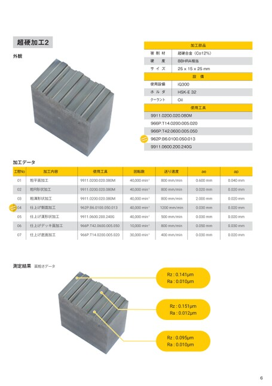

p.6加工事例 超硬加工2

超硬加工2
加工部品
外観 被削材 超硬合金(Co12%)被削材 超硬合金(Co12%)
硬度 88HRA相当
サイズ 25x15x25mm
設備
使用設備 iQ300
ホルダ HSK-E32
クーラント Oil
使用工具
9911.0200.020.080M
966P.T14.0200.005.020
966P.T42.0600.005.050
962P.B6.0100.050.013
9911.0600.200.240G
加工データ
工程No使用工具加工内容 回転数 使用工具送り速度 回転数 ae 送り速度 ap ae ap
9911.0200.020.080M 01 粗平面加工 40,000min-19911.0200.020.080M800mm/min 40,000min-1 0.600mm 800mm/min 0.040mm 0.600mm 0.040mm
9911.0200.020.080M 02 粗R形状加工 40,000min-19911.0200.020.080M800mm/min 40,000min-1 0.020mm 800mm/min 0.020mm 0.020mm 0.020mm
9911.0200.020.080M粗溝形状加工 03 40,000min-19911.0200.020.080M800mm/min 40,000min-1 2.000mm 800mm/min 0.020mm 2.000mm 0.020mm
962P.B6.0100.050.013仕上げ側面加工 04 40,000min-1 962P.B6.0100.050.013 1200mm/min 40,000min-1 0.030mm 1200mm/min 0.020mm 0.030mm 0.020mm
9911.0600.200.240G仕上げ溝形状加工 05 40,000min-19911.0600.200.240G500mm/min 40,000min-1 0.030mm 500mm/min 0.020mm 0.030mm 0.020mm
966P.T42.0600.005.050仕上げデッキ面加工 06 10,000min-1966P.T42.0600.005.050 800mm/min 10,000min-1 0.050mm 800mm/min 0.030mm 0.050mm 0.030mm
966P.T14.0200.005.020 07 仕上げ底面加工 30,000min-1966P.T14.0200.005.020 400mm/min 30,000min-1 0.030mm 400mm/min 0.020mm 0.030mm 0.020mm
測定結果面粗さデータ
Rz:0.141μm
Ra:0.010μm
Rz:0.151μm
Ra:0.012μm
Rz:0.095μm
Ra:0.010μm
6